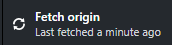

Using Github
Pull and push files at the beginning and end of every session with outputs.
Anytime you work in the outputs repository, you must synchronize the local repository with the remote one before you start, to be sure you have the current version. When you finish with it, synchronize everything again, so the next person has the current version.
-
At the start of every session:
- Open GitHub Desktop using the icon on the taskbar.
- Select Fetch origin  to synchronize your local copy with the online one.
-
At the end of every session: